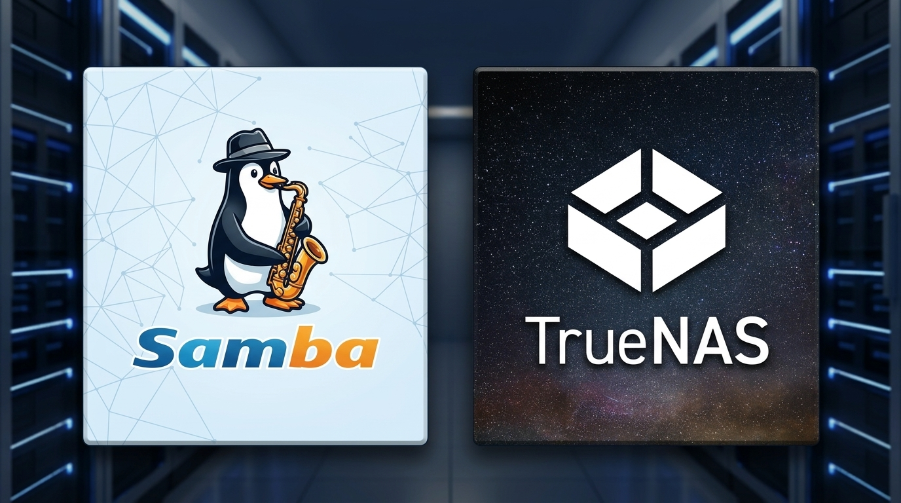
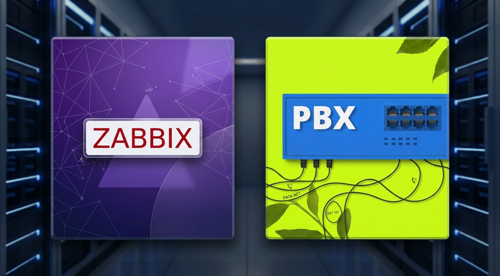
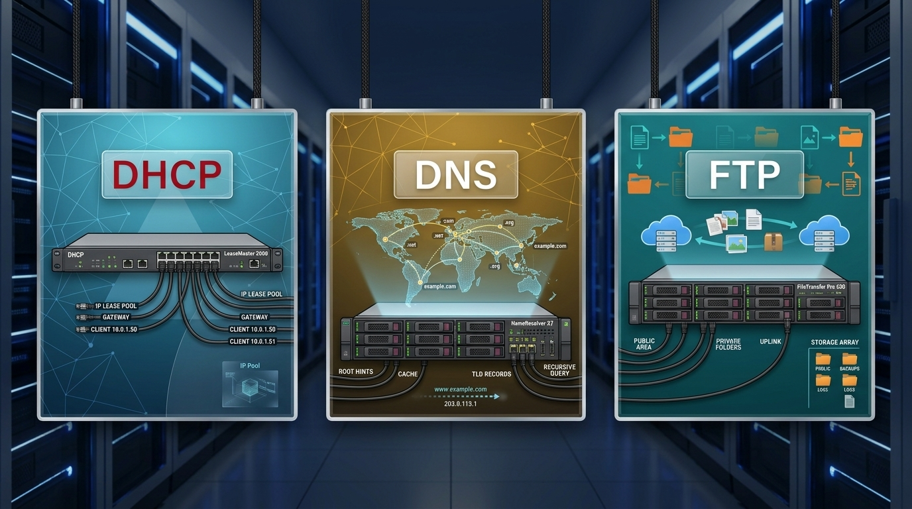

Este modulo incluye servidores web como Apache e IIS, que permiten alojar sitios web y aplicaciones web para diferentes plataformas, mediante protocolos HTTPS/HTTPS.
Learn More
Servidores de almacenamiento como Samba y TrueNAS, para compartir archivos y gestionar datos de manera eficiente.
Learn More
Este modulo incluye servidores de telefonía y monitoreo, puedes ver el rendimiento y comunicacion.
Learn More
Este modulo incluye servidores auxiliares que permiten la comunicacion y conexion como DHCP, DNS y FTP, que son esenciales para el funcionamiento de la red.
Learn More